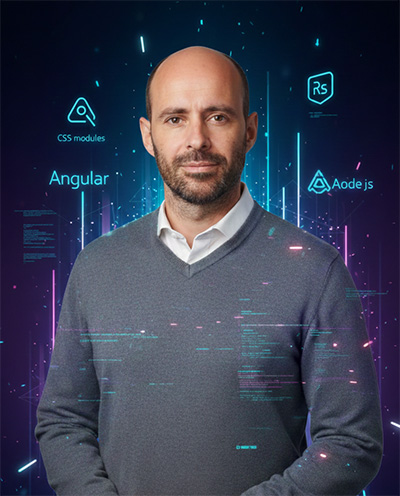

Consultoría y diagnóstico digital
Análisis de web, experiencia de usuario, SEO local, Google Business, canales de captación, reputación online y puntos de fuga en el proceso de reserva o contacto.

Mi foco actual es ayudar a empresas a mejorar su captación, comunicación y operación digital. Trabajo sobre tres frentes: consultoría para detectar oportunidades, gestión de soluciones online y automatización con IA para reducir tareas repetitivas y optimizar procesos.
Aporto una base técnica sólida en desarrollo web, UX/UI, analítica, SEO, performance e integraciones, después de más de 15 años en productos digitales para compañías como The Coca-Cola Company e ICBC Argentina. Ese recorrido me permite unir marketing, tecnología y automatización sin depender de soluciones genéricas.
Análisis de web, experiencia de usuario, SEO local, Google Business, canales de captación, reputación online y puntos de fuga en el proceso de reserva o contacto.
Landing pages, formularios, campañas, contenidos, medición, email marketing y flujos para recuperar interesados en rutas, reservas, menús, alojamientos o experiencias concretas.
Asistentes 24/7 para preguntas frecuentes, reservas, disponibilidad y precios, conectados a formularios, CRM, email o WhatsApp para reducir carga manual y acelerar la respuesta.
Desarrollo de Social TV, una plataforma crítica para combatir la soledad en adultos mayores.
Dirigí la transformación técnica del área de pagos digitales, gestionando equipos multidisciplinarios.
Orquesté la arquitectura frontend de un ecosistema de marketplace global (Wabi2B, WabiPay).
Diseño de soluciones SaaS críticas para seguridad pública y logística.
Optimización de la banca digital para millones de usuarios.
Desarrollé y mantuve plataformas web y móviles gubernamentales en Drupal y WordPress, asegurando el cumplimiento de los requerimientos institucionales.
Diseñé, desarrollé e implementé Ondiss, la plataforma líder de juego online en Argentina. Lideré la arquitectura frontend en un entorno de alto tráfico y seguridad crítica.
Desarrollé e integré interfaces para sitios de masivo tráfico como TN y El Trece TV.
EducaciónIT
EOI (Escuela Organización Ind.)
ITMaster Academy
Inst. Sup. Mariano Moreno
Estos son testimonios reales de LinkedIn. Puedes corroborarlos ver recomendaciones en LinkedIn
Si tienes una empresa turística o local y quieres mejorar tu captación directa, tu web, tu SEO local o la atención de consultas repetitivas, puedo ayudarte con un diagnóstico claro y soluciones prácticas de marketing, automatización e IA.